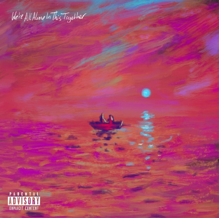
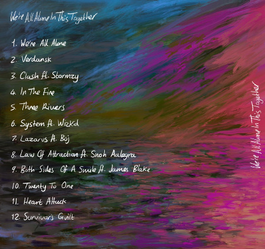
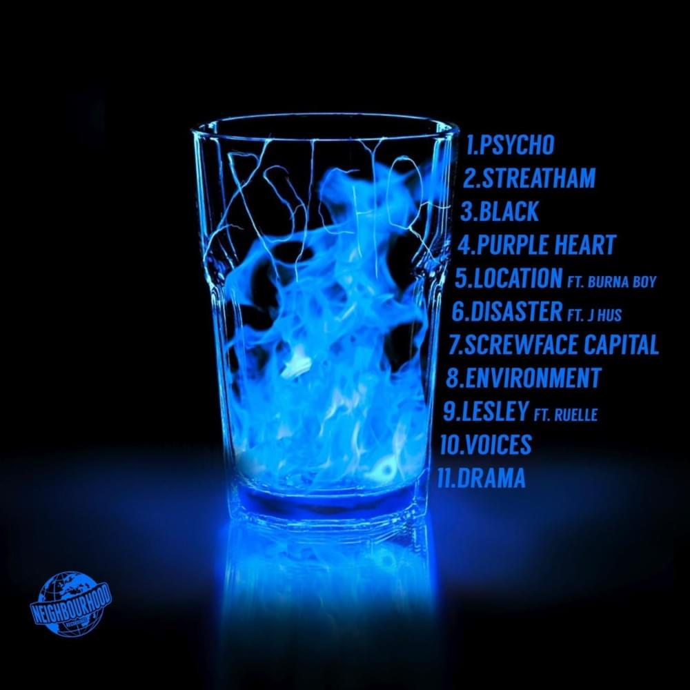
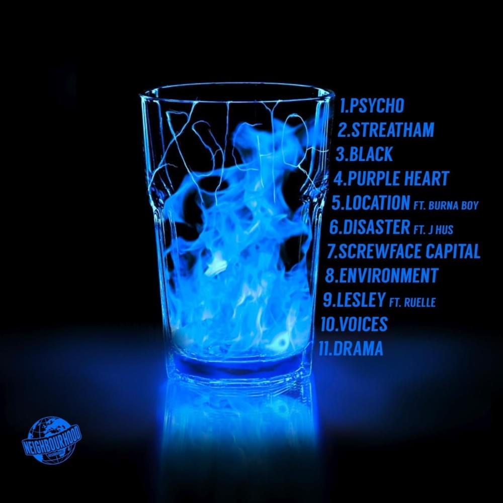

We're All Alone in This Together
Released July 2021
Musicians:
- Dave, Vocals & Production
- Kyle Evans, Instruments & Production
- Jonny Leslie, Engineering
We’re All Alone in This Together is the second studio album by British rapper Dave. The album received huge universal critical acclaim and follows the themes of loneliness and mental health, as well as social commentary on the conditions faced by young black people in society.


Side One
- We're All Alone
- Verdansk
- Clash ft. Stormzy
- In the Fire
- Three Rivers
- System ft. Wizkid
Side Two
- Lazarus ft. Boj
- Law of Attraction ft. Snoh Aalegra
- Both Sides of a Smile ft. James Blake
- Twenty to One
- Heart Attack
- Survivor's Guilt
- We're All Alone in This Together received widespread acclaim from music critics. David Smyth of the Evening Standard called Dave "the greatest rapper working in Britain today".
- Dave revealed that the album art is re-interpretation of French painter Claude Monet’s ’Impression, Soleil Levant’. The two people in the boat on the cover represents Dave and his mum.
- David Orobosa Omoregie (Dave)
- The album debuted at number one on the UK Albums Chart, selling 74,000 album equivalent units first week, becoming Dave's second consecutive number one album.
 
